Biodiversité
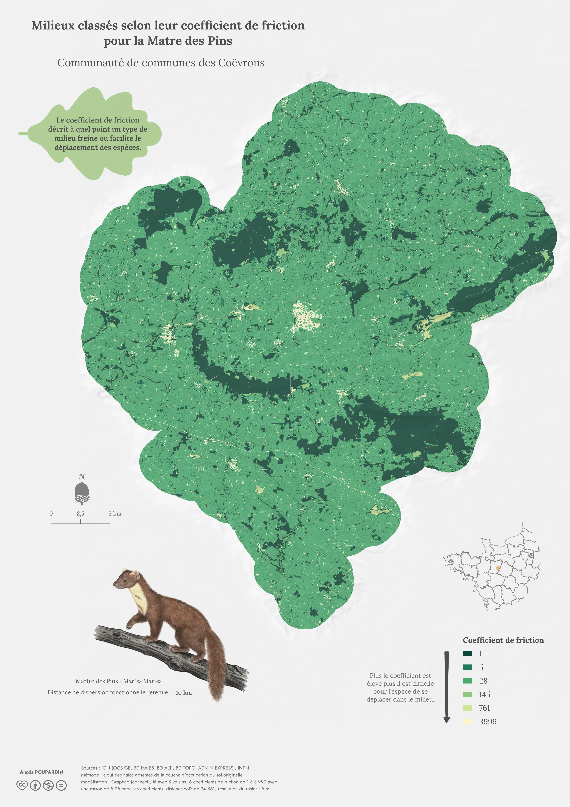
Milieux classés selon leur coefficient de friction pour la Matre des Pins
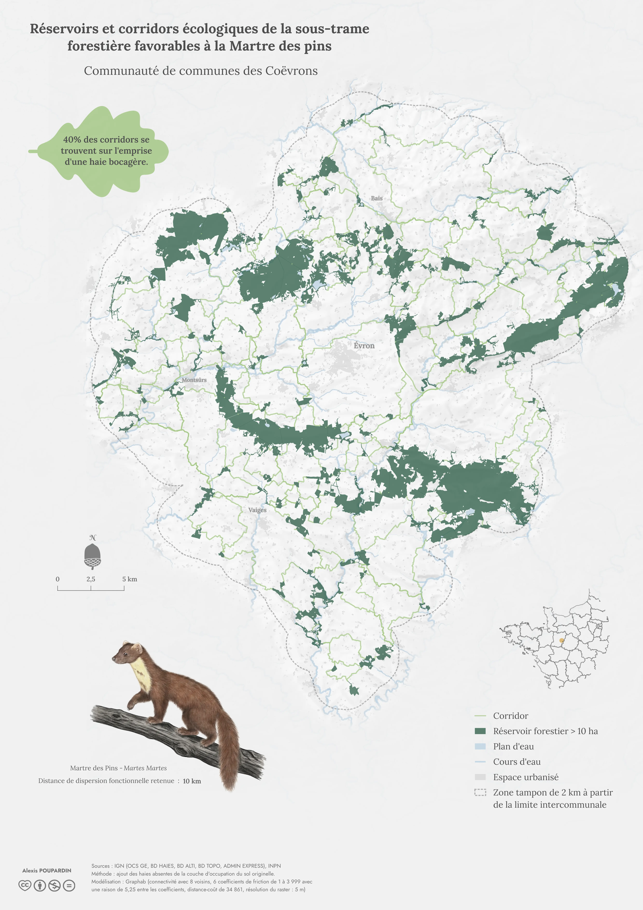
Réservoirs et corridors écologiques de la sous-trame forestière favorables à la Martre des pins
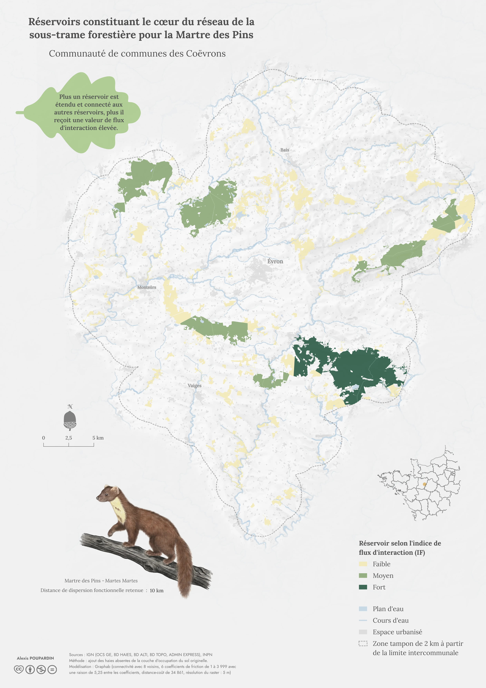
Réservoirs constituant le cœur du réseau de la sous-trame forestière pour la Martre des Pins
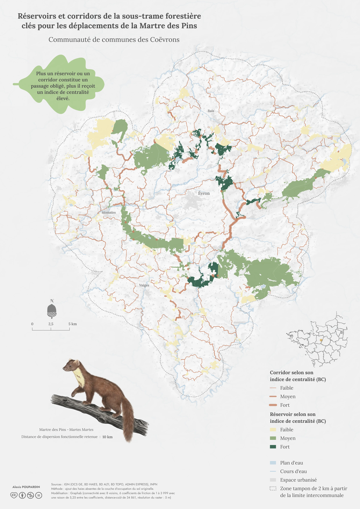
Réservoirs et corridors de la sous-trame forestière clés pour les déplacements de la Martre des Pins
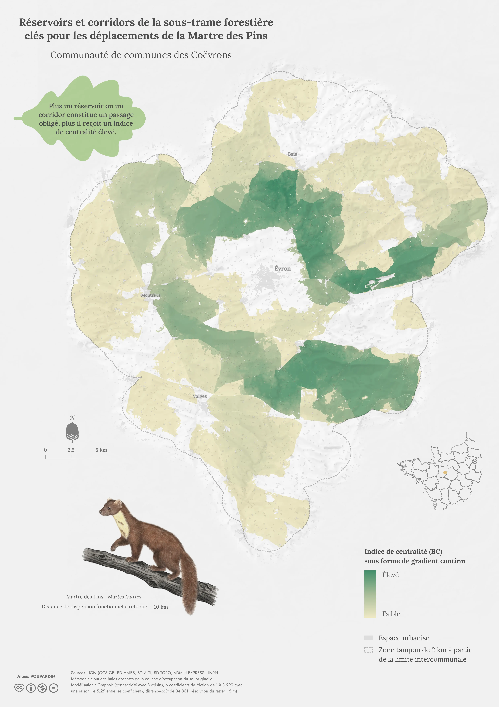
Réservoirs et corridors de la sous-trame forestière clés pour les déplacements de la Martre des Pins (format raster)
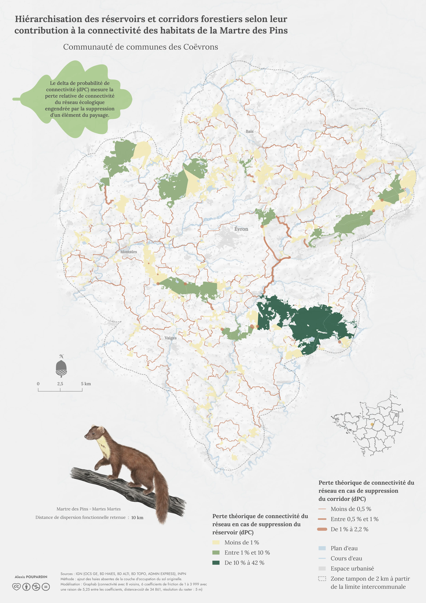
Hiérarchisation des réservoirs et corridors forestiers selon leur contribution à la connectivité des habitats de la Martre des Pins
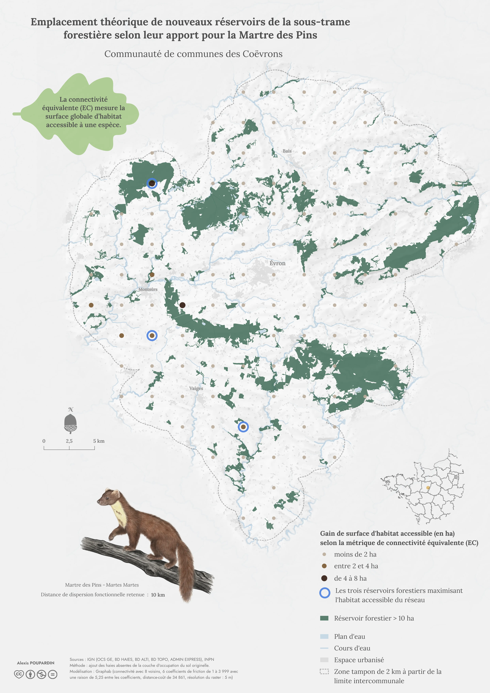
Emplacement théorique de nouveaux réservoirs de la sous-trame forestière selon leur apport pour la Martre des Pins
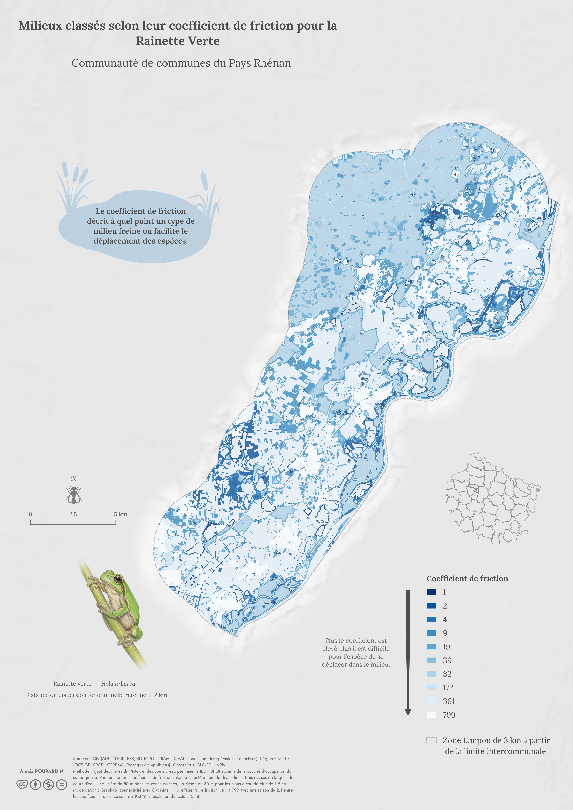
Milieux classés selon leur coefficient de friction pour la Rainette Verte
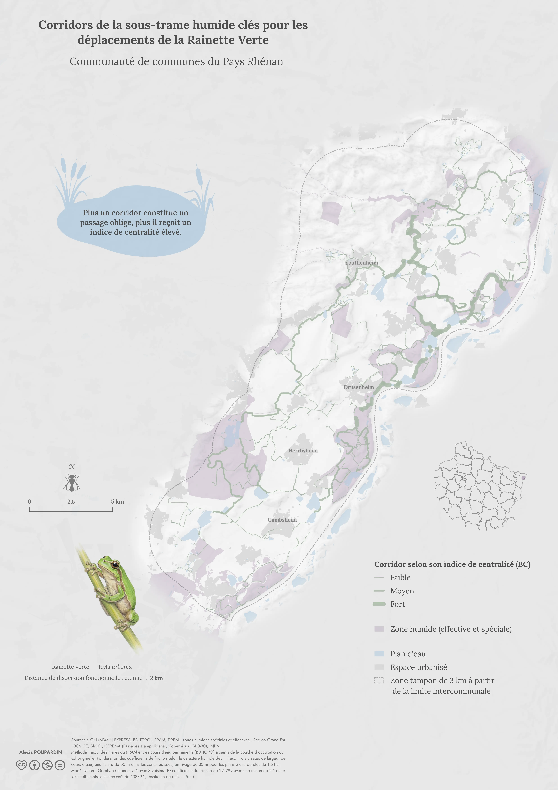
Corridors de la sous-trame humide clés pour les déplacements de la Rainette Verte
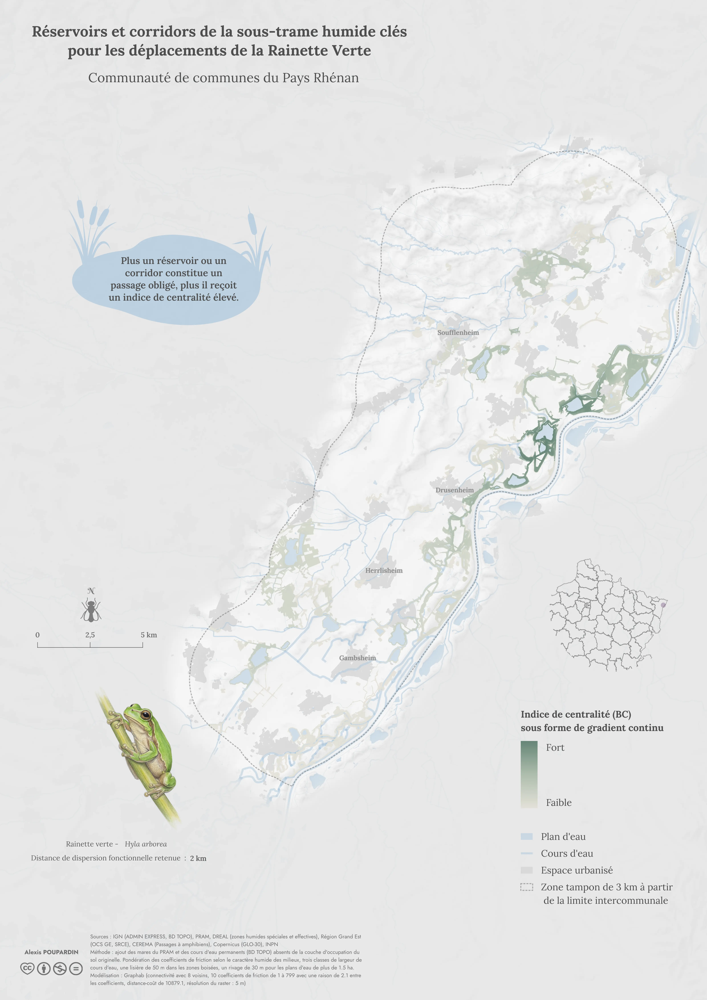
Réservoirs et corridors de la sous-trame humide clés pour les déplacements de la Rainette Verte (format raster)
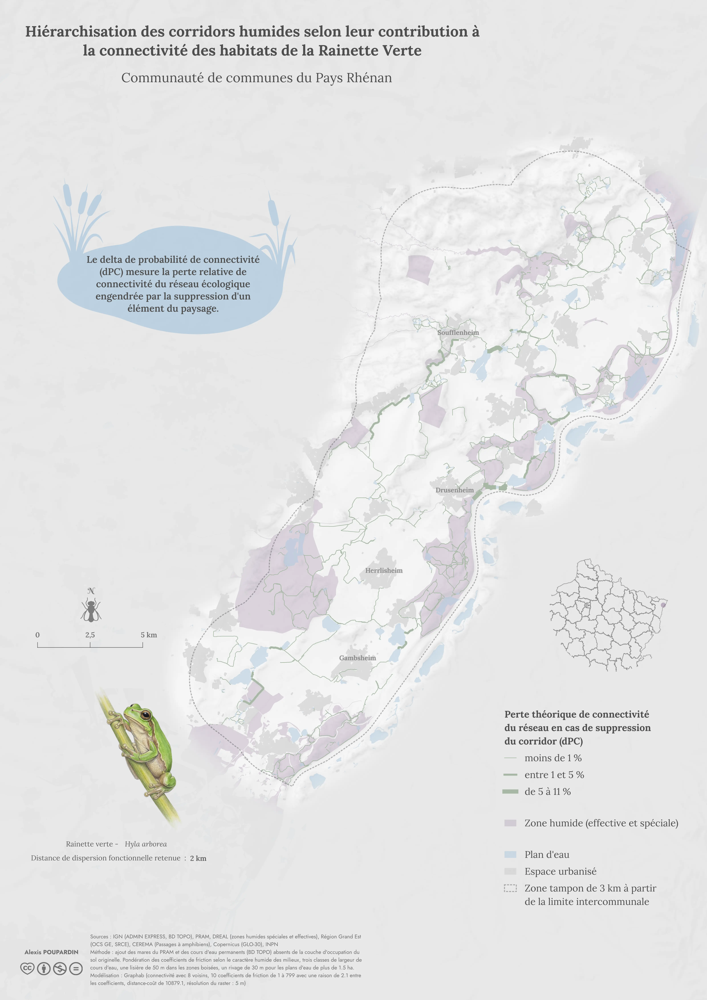
Hiérarchisation des corridors humides selon leur contribution à la connectivité des habitats de la Rainette Verte
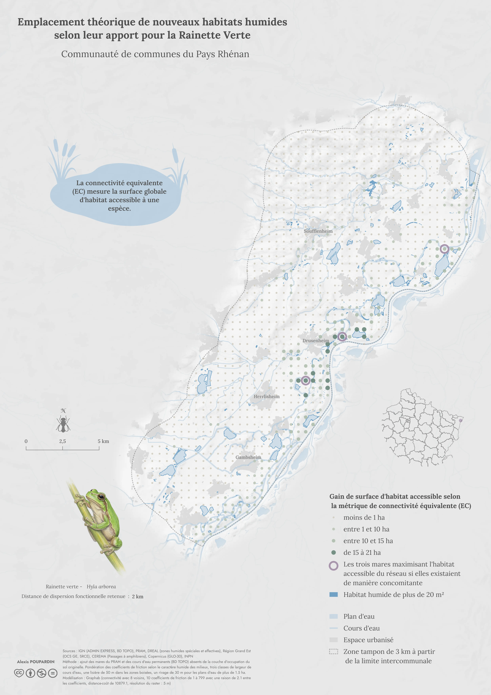
Emplacement théorique de nouveaux habitats humides selon leur apport pour la Rainette Verte
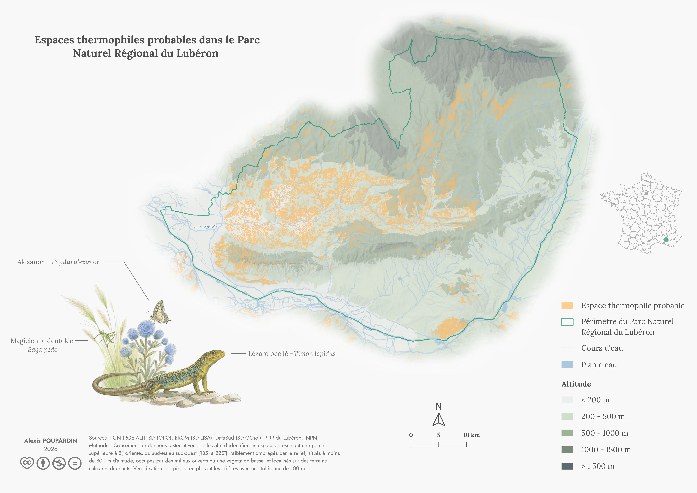
Espaces thermophiles probables dans le Parc Naturel Régional du Lubéron